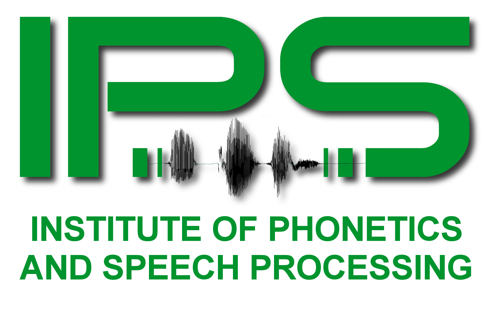

Warning! This page is still under construction! Please don't read on! The information below is either incomplete or might even be false...
Welcome to our GitHub projects

This is an overview page of the GitHub projects of the Institute Of Phonetics And Spreech Processing of the University of Munich. The current projects hosted by GitHub can be found in the navigation menu above.